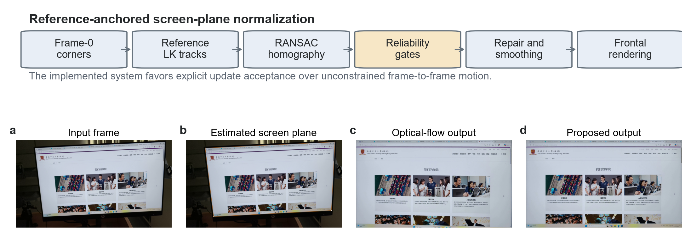
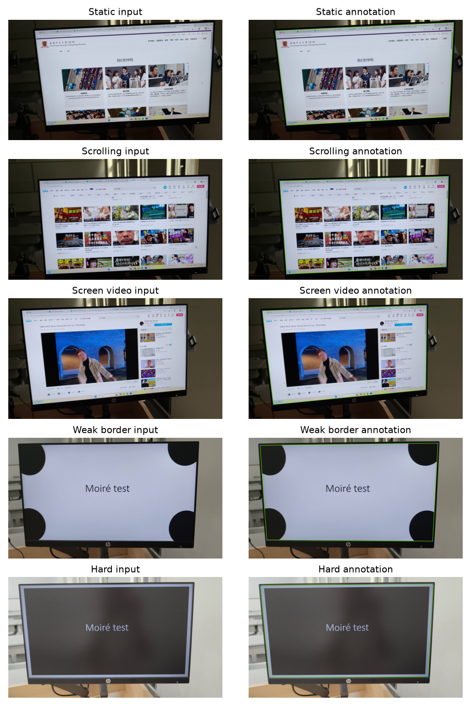
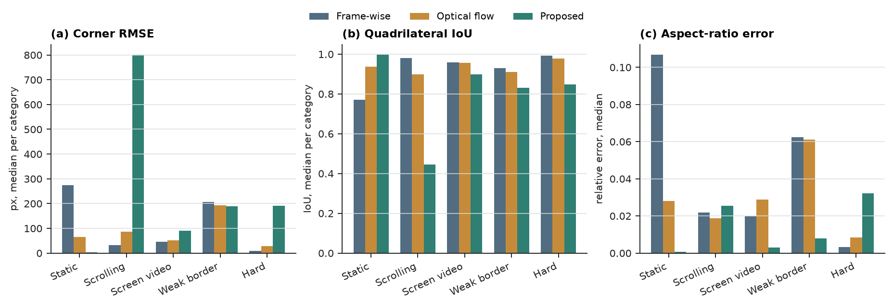
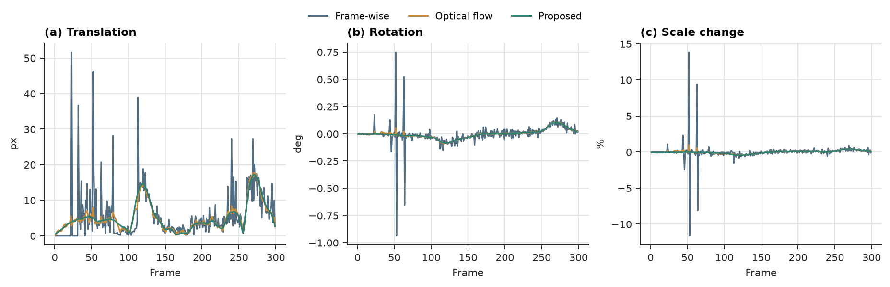
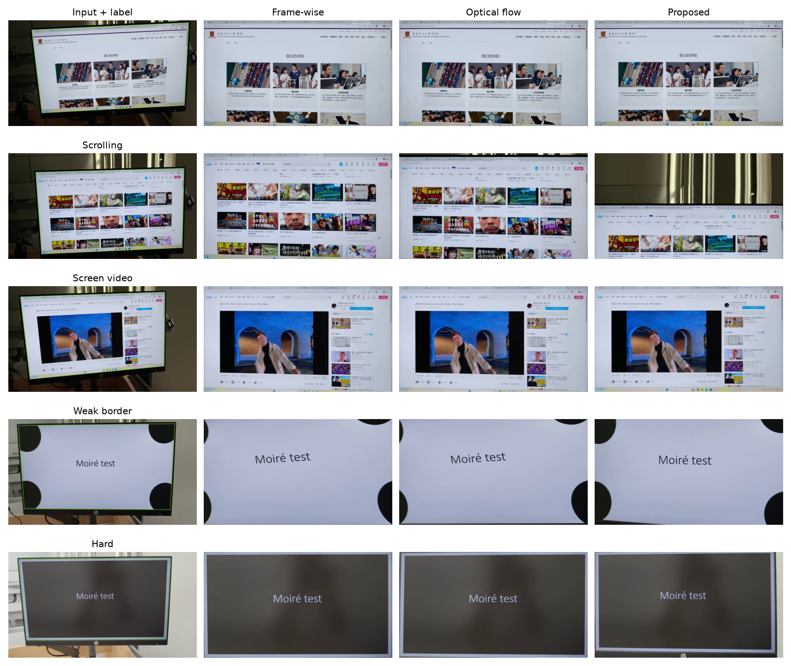
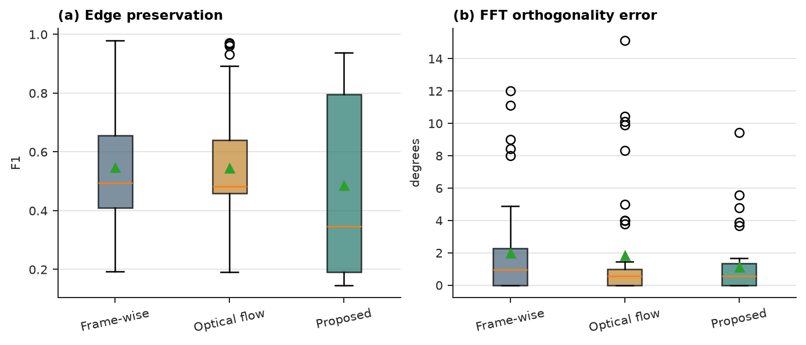
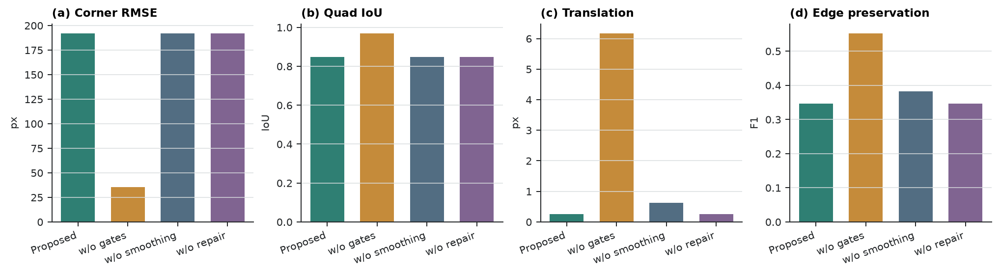
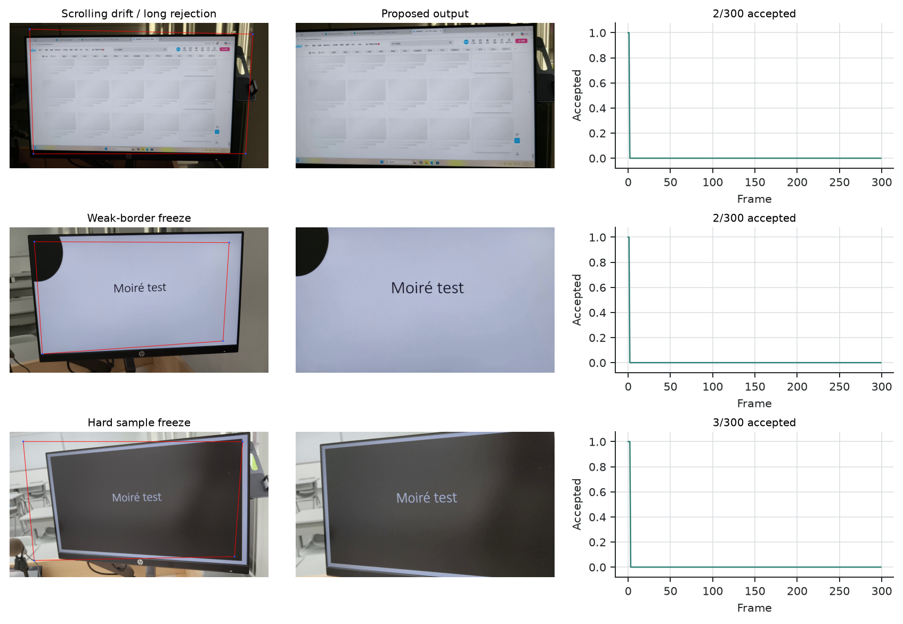

Handheld videos of computer displays are often used when direct screen recording is unavailable or inappropriate. These videos include background clutter, projective distortion, camera shake, weak screen borders, and screen content that may scroll or play independently of the physical monitor. This paper implements and evaluates a classical computer-vision front end for this setting. The pipeline initializes a screen quadrilateral, tracks the screen plane against a fixed reference frame with pyramidal Lucas-Kanade features and a RANSAC homography, rejects unreliable updates with explicit gates, repairs and smooths the corner trajectory, and renders a frontal screen-coordinate video. The first-pass experiment processes 50 real captured-screen videos and 14985 frames across five categories: hard, screen_video, scrolling, static, and weak_border. All three evaluated methods, frame-wise detection, adjacent-frame optical flow, and the proposed reference-anchored pipeline, completed all clips. Geometry evaluation used 45 clips and 179 non-initialization annotated frames after excluding frame 0, which is used for initialization. The proposed method obtained a median corner RMSE of 191.83 px, median quadrilateral IoU of 0.849, and median relative aspect-ratio error of 0.8%. The corresponding values were 32.56 px, 0.979, and 2.0% for Frame-wise, and 34.88 px, 0.973, and 2.1% for Optical flow. The proposed method produced much smaller trajectory-derived translation variation, 0.254 px/frame versus 4.886 and 12.311 px/frame for the baselines, but its median edge-preservation index was 0.347, below 0.494 and 0.482 for the baselines. The results show that reference anchoring and conservative gates can produce a smoother estimated trajectory, but the current implementation often freezes or propagates wrong geometry under dynamic content, weak borders, and long rejection periods. The system is therefore best understood as a reproducible geometric preprocessing framework and improvement baseline, not as a completed demoireing method or an overall winner against the baselines.
Keywords: screen rectification; video stabilization; homography; optical flow; captured-screen video; projective geometry
Recording a physical display with a handheld camera is a common way to preserve a presentation, demonstrate software, or capture content on a device that cannot be directly recorded. Unlike a native screen recording, a camera observation includes the display surroundings and is affected by viewpoint, lens sampling, hand motion, glare, partial occlusion, and exposure changes. A useful downstream system for screen restoration, demoireing, or OCR must first identify the screen plane, remove perspective distortion, and create a stable screen-coordinate signal.
The geometric front end is not trivial. Visible screen content may scroll, animate, or play video while the physical display moves only because of camera motion. A tracker that follows all internal texture can confuse content motion with screen motion. Conversely, detecting the screen independently in every frame can convert small detection errors into visible output jitter. This work estimates a time-varying screen quadrilateral from full handheld scene videos and renders frontal screen videos with explicit diagnostics.
The project makes four practical contributions:
The implementation should not be interpreted as a demoireing system. It performs geometric normalization and resampling only. The Fourier analysis reports directional regularity and high-frequency structure after rectification; it is not a moire-suppression score. The current implementation also differs from the original proposal: physical border lines are not yet the dominant evidence for per-frame motion estimation. All claims in this paper are limited to the code that was actually run.
Captured-screen restoration and video demoireing methods usually assume that the screen region is already well cropped or aligned. Dai et al. build spatially and temporally aligned captured/clean video pairs and learn relation-based temporal consistency [16]. Xu et al. combine direction-aware frequency processing, alignment, color correction, and detail refinement [17]. Yue et al. study raw-domain screen recapture and modulation-based restoration [18]. These works focus on content restoration. The present work addresses the preceding front end: producing a frontal screen-coordinate video from a full handheld scene.
Planar document and screen rectification rely on the same projective geometry: a planar surface observed by a perspective camera is mapped to a frontal coordinate system by a homography. Camera-based document analysis has used page borders, line evidence, layout cues, and vanishing points to recover frontal document images [1--4]. Screen-camera calibration also treats the display as a planar projective surface, although controlled projected patterns provide evidence unavailable in ordinary handheld recordings [4]. These methods support the geometric model used here, but single-image rectification applied frame by frame does not guarantee temporal continuity.
The tracker uses classic feature tracking and robust model fitting. Lucas-Kanade registration [7] and its pyramidal implementation [8] support local tracking under larger displacements, while Shi-Tomasi features [9] provide trackable corners. RANSAC and related robust estimators [10] estimate homographies when incorrect correspondences are present. Video-stabilization research further shows that path smoothing, geometric distortion, and crop cost should be evaluated separately [11--14]. Our target is narrower: only the physical screen plane is stabilized, and the output canvas is the screen rectangle itself. This removes the usual background crop trade-off but introduces ambiguity between camera motion and dynamic screen content.
For each frame, the observed screen is represented by four ordered corners: top-left, top-right, bottom-right, and bottom-left. The system initializes the screen plane from manual frame-0 corners or from an automatic contour detector. It then selects Shi-Tomasi features inside the reference screen region. For a new frame, pyramidal LK optical flow tracks reference features into the current image, and a forward-backward check removes inconsistent matches. The remaining correspondences are used to estimate a RANSAC homography, which projects the reference quadrilateral into the current frame.
Candidate updates must pass reliability checks, including minimum match count, RANSAC inlier count and ratio, median reprojection error, spatial coverage on the screen plane, quadrilateral area change, side-length ratios, and convexity. If an update fails, the online trajectory holds the last accepted quadrilateral. After all frames are processed, the trajectory is repaired by interpolation, robust median filtering, and exponential smoothing. Each frame is finally warped to a fixed frontal canvas. An optional residual-alignment step allows only small affine corrections after the main homography.

The experiment compares three methods. Frame-wise estimates the screen quadrilateral independently in each frame and does not smooth the result. Optical flow propagates geometry from the previous frame to the current frame without fixed-reference anchoring. Proposed uses fixed-reference tracking, reliability gates, failure holding, offline interpolation, median filtering, exponential smoothing, and residual alignment. The recorded Proposed configuration for the formal run is smooth=0.85, median_window=5, trajectory_window=9, interpolate=true, geometry_gate=true, reference_align=true, and reference_reliability_gates=true.
All methods process the same input clips and use the same frame-0 initialization, output canvas, encoder, annotations, and metric functions. The comparison therefore isolates the trajectory-estimation and temporal-processing choices as much as possible.
The experiment uses 50 videos from data/active, totaling 14985 frames. The five categories each contain ten clips: hard for difficult viewpoints or backgrounds, screen_video for videos playing inside the display, scrolling for scrolling content, static for mostly static content, and weak_border for weak or low-contrast screen boundaries. Category is determined by folder name, and filename is the clip identifier.

Frame 0 is used for initialization and is excluded from geometry scoring. Human annotations provide the visible screen corners in top-left, top-right, bottom-right, bottom-left order. The 50 clips contain 228 annotated frames. After excluding initialization frames, 45 clips retain 179 matched annotated frames. Five scrolling clips have only frame-0 annotations, so their geometry metrics are skipped while they remain in temporal, detail, and frequency evaluations.
| Category | Clips | Frames |
|---|---|---|
| hard | 10 | 3000 |
| screen_video | 10 | 2996 |
| scrolling | 10 | 2995 |
| static | 10 | 2994 |
| weak_border | 10 | 3000 |
| Total | 50 | 14985 |
Geometry is evaluated on non-initialization annotated frames using corner RMSE, quadrilateral IoU, and relative aspect-ratio error. Temporal stability is measured from the frame-to-frame projective change of each method's estimated screen quadrilateral and is decomposed into translation, rotation, and scale variation. This metric is a trajectory-derived diagnostic, not an independent proof of physical stabilization, because it shares information with the estimator being evaluated.
Detail preservation is measured on sampled frames using gradient-magnitude ratio and an edge-preservation index. Frequency diagnostics analyze FFT direction and orthogonality on fixed sampled frames. These frequency values describe directional regularity after geometric normalization; they do not measure demoireing quality. Results are aggregated per clip and reported as medians with interquartile ranges, with per-clip CSV and JSON files retained for audit.
The run environment was Windows 11, Python 3.12.13, OpenCV 5.0.0, NumPy 2.5.1, and FFmpeg 8.1. Runtime includes algorithm execution and metric generation but excludes manual annotation.
The main run, runs/20260714_full_pipeline_first_pass, completed all 50 clips. The three methods produced 150 rectified videos, 600 metric JSON files, and 50 HTML audit reports. Total processing time was approximately 1111.2 s for Frame-wise, 1647.9 s for Optical flow, and 1800.3 s for Proposed. Median per-clip time was 22.3 s, 32.9 s, and 36.1 s, respectively.
Table 2 summarizes the main metrics. Lower geometry, temporal, and frequency errors are better, while higher edge preservation is better. Proposed is the most stable in trajectory-derived translation, rotation, and scale variation, but it is not best in geometry or edge preservation.
| Metric | Frame-wise | Optical flow | Proposed |
|---|---|---|---|
| Corner RMSE, px ↓ | 32.56 [8.98, 205.83] | 34.88 [27.79, 167.78] | 191.83 [3.56, 206.27] |
| Quadrilateral IoU ↑ | 0.979 [0.855, 0.991] | 0.973 [0.892, 0.978] | 0.849 [0.810, 0.996] |
| Relative aspect error ↓ | 2.0% [0.3%, 6.2%] | 2.1% [0.8%, 5.6%] | 0.8% [0.1%, 3.2%] |
| Translation variation, px/frame ↓ | 4.886 [3.641, 8.354] | 12.311 [4.136, 13.648] | 0.254 [0.026, 3.411] |
| Rotation variation, deg/frame ↓ | 0.037 | 0.048 | 0.0005 |
| Scale variation, relative/frame ↓ | 0.0028 | 0.0048 | 0.0001 |
| Gradient-magnitude ratio | 0.974 | 0.984 | 0.985 |
| Edge-preservation index ↑ | 0.494 [0.409, 0.656] | 0.482 [0.459, 0.640] | 0.347 [0.192, 0.795] |
| FFT orthogonality error, deg ↓ | 0.944 [0.000, 2.278] | 0.556 [0.000, 1.000] | 0.556 [0.000, 1.333] |
Category-level geometry shows that Proposed has the lowest median error in static, where content motion is limited and reference anchoring is useful. However, it performs poorly in hard, screen_video, scrolling, and weak_border. The scrolling median reaches 801.48 px, indicating that internal content motion can still contaminate reference features or cause long failure holds. Frame-wise and Optical flow have similar overall median geometry errors and are both much lower than Proposed.

This constrains the interpretation of temporal stability. A smoother Proposed trajectory is useful only if the held or smoothed quadrilateral is still geometrically correct. The current version should therefore not claim overall geometric superiority over the baselines.
Proposed obtains a median trajectory-derived translation variation of 0.254 px/frame, much lower than 4.886 for Frame-wise and 12.311 for Optical flow. Rotation and scale variation follow the same pattern. Figure 4 shows that Proposed is especially smooth in hard and weak_border, while scrolling remains problematic. This matches the failure diagnostics: gates reduce jitter, but may also hide camera motion or wrong estimates by holding stale geometry.

The qualitative comparison shows the same trade-off. On static or clearly bounded screens, Proposed often appears more stable. On scrolling content and difficult views, it can crop, shift, or retain an old geometry too long. Figure 5 shows input frames and outputs selected with a fixed protocol.

The median gradient-magnitude ratio for Proposed is 0.985, close to the baselines. Its median edge-preservation index, however, is 0.347, below 0.494 for Frame-wise and 0.482 for Optical flow. This indicates that a smoother trajectory does not automatically preserve local edge alignment. The loss may come from geometry error, stale holds, extra resampling, or residual alignment.
In the frequency diagnostics, Proposed and Optical flow both have a median FFT orthogonality error of 0.556 deg, lower than 0.944 deg for Frame-wise. Proposed also has lower axis-alignment error. This means that rectified output directions are more regular, not that moire artifacts are removed. Figure 6 summarizes the detail and frequency panels.

The full ablation run, runs/20260714_full_ablation_first_pass, repeated all 50 clips. Removing reliability gates reduces median geometry RMSE from 191.83 px to 35.63 px and raises IoU from 0.849 to 0.968, but increases trajectory translation variation from 0.254 px/frame to 6.165 px/frame. Edge preservation also rises from 0.347 to 0.552. This shows that the present gates are too conservative: they strongly reduce trajectory variation but sacrifice much of the geometric fit and edge consistency. Removing trajectory smoothing leaves geometry almost unchanged and increases translation variation to 0.617 px/frame, showing that smoothing mainly affects temporal diagnostics. Removing offline repair is nearly identical to the full Proposed method on the primary metrics, suggesting that this module was not strongly triggered in the first-pass run.

Manual audit identified three representative failure modes. First, scrolling content creates reference features unrelated to the physical screen, leading to rejected or wrong updates; scrolling_10 accepts only 2 of 300 frames. Second, weak borders or low texture leave too little reliable coverage; weak_border_10 also accepts only 2 of 300 frames. Third, difficult viewpoints or occlusion can propagate early geometry errors; hard_01 accepts only 3 of 300 frames. Figure 8 links visible output defects to acceptance diagnostics.

The first-pass results do not support a strong claim that Proposed is better than the baselines on every axis. A more defensible interpretation is that reference anchoring, reliability gates, and trajectory smoothing substantially reduce short-term variation in the estimated trajectory, but the present gates often freeze the trajectory and may freeze the wrong geometry under dynamic content or weak boundaries. Temporal metrics must therefore be interpreted together with annotated geometry, edge preservation, and qualitative audit evidence.
The ablation is the clearest engineering signal. The no-gates variant fits the annotated frames much better but is temporally less stable. The full Proposed method is much smoother but geometrically worse. The next improvement should therefore not be more smoothing; it should improve the evidence used to accept updates. The most direct path is to complete the proposal-level physical-border tracker: use LSD/Hough-style line evidence to estimate screen borders and intersections, and use interior features only for consistency checks rather than allowing screen content features to dominate the homography.
The experiment has several limitations. The dataset is small and self-collected by the project team, so it cannot establish generalization across devices, display technologies, or capture distances. Geometry annotations are sparse, and several scrolling clips have only initialization-frame annotations, limiting geometry evidence for that category. The temporal metric is derived from the estimated trajectory itself and is not independent physical stabilization evidence. Detail and frequency metrics are diagnostics without paired clean screen recordings, so they do not evaluate demoireing quality. Finally, every perspective warp resamples the image; frontal geometry and stability can come at the cost of blur, ringing, or changed high-frequency structure.
This paper completes an end-to-end experimental pass for geometric normalization of real captured-screen videos. The pipeline processed 50 videos and produced rectified outputs, structured metrics, audit reports, manuscript figures, and reproducible documentation. The current Proposed method greatly reduces trajectory-derived translation, rotation, and scale variation, but it does not outperform the baselines in overall geometry or edge preservation. The system is best treated as an auditable geometric preprocessing framework and a baseline for further improvement. The next work should improve reliability gates and physical-border evidence before integrating the front end with demoireing or screen-content restoration models.
The reported values come from runs/20260714_full_pipeline_first_pass and runs/20260714_full_ablation_first_pass. Aggregated CSV files, evidence notes, and figures are stored under doc/paper/results/full_pipeline_first_pass, doc/paper/results/full_ablation_first_pass, doc/paper/evidence/full_pipeline_first_pass_2026-07-14.md, and doc/paper/manuscript/figures. The raw videos are course-project data and require team review before any public release.
The code is on branch experiment/full-pipeline-first-pass. Experiments are run with uv-managed Python scripts. Key evidence commits include 319b335 for refreshed first-pass evidence and 9896cd1 for manuscript figures. This manuscript revision is recorded by a later commit containing the complete paper source and exported files.
All three authors contributed to project framing, data collection, annotation, implementation, experiment execution, and manuscript preparation. The repository history records the concrete code, documentation, and experiment artifacts; individual contributions can be further itemized for the final course submission if required.